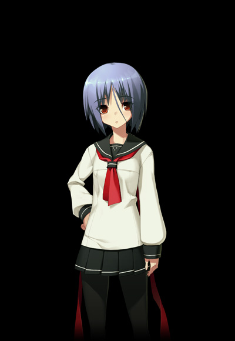

湊斗 景明
CV：石川ゆうすけ
「一身上の都合により……貴方を殺害する」
物語の主人公。陰鬱な風貌の青年。
殺戮者『銀星号』を追って関東各地を徘徊し、その過程で奇怪な殺人を行う。
村正
CV：須本綾奈
「諒解。死を始めましょう」
景明の操る劒冑。千子右衛門尉村正の銘を持つ。
強大な出力と厚い甲鉄を誇る正統派であり、赤い蜘蛛の形態をとって独立行動することもできる。
鋼鉄の体に相応しく冷淡な性格。
綾弥 一条
CV：海原エレナ
「あたしは六波羅を憎みます。
あいつらは、間違っているから」
鎌倉市内に住む学生。
正義感が異常なほど強く、非道を行う者には力の及ぶ限り挑もうとする。
景明と出会った当初は、臆病者と思って軽蔑するが、とある事件をきっかけに景明と行動を共にすることになる。

大鳥 香奈枝
CV：吉川華生
「景明さまは……人を殺すのがお好きですか？」
流麗な長身を持つ女性。
大和の名族大鳥家の娘だが、現在はGHQに所属している。
とある任務の最中に景明と出会い、以後彼に好意を示して何それとなく近付く。
コントラバスの演奏が趣味。
足利 茶々丸
CV：金田まひる
「力だけの政治はもう終わった。
これからはエンターテイメントの時代だっ！」
大将領足利護氏に仕える四人の公方(将軍)の一人、堀越公方。
明るく人懐っこい少女だが、年齢に相応しくないその地位は、実の父親を殺して奪い取ったものである。
ある目的を持って景明に接近する。
永倉 さよ
CV：千代鈴
「それは業というものでございますよ。
人面獣心のお嬢さま」
香奈枝のお付のばあや。
温和な老婦人であり、誰に対しても丁重に接する。
遊佐 童心
CV：居口伝衛門
今川 雷蝶
CV：杉崎和哉
足利 護氏
CV：秋山樹
大鳥 獅子吼
CV：蒼井大地
クライブ・
キャノン
CV：転可統一
ジョージ・
ガーゲット
CV：瀬路啓維
トーマス・
コブデン
CV：J一郎
チャールズ・
ウィロー
CV：秋山樹
謎の少女
CV：？？？
「景明。おまえの苦しみを拭ってやる」
たびたび景明の前に現れる少女。
その真意は一切の謎に包まれている。